GRUPO 8 — SESIMBRA E SETÚBAL
Índice
P1 — Enquadramento NUTS · socioeconomia P2 — Leitura do lugar imagem base e registo próprio P3 — Caracterização climática EPW · IPMA · Csb P4 — Cultura arquitetónica território P5 — SWOT matriz P6 — Proposta volumetria · programaConceito — síntese P1
Charneira atlântica Arrábida–Espichel: conter a expansão, ancorar o valor metropolitano na paisagem protegida.
Índice
Conteúdo da análise de sítio. Estrutura geral, a completar à medida do desenvolvimento do projeto.
P1 — Enquadramento NUTS e caracterização socioeconómica
NUTS I: Continente. NUTS II: Península de Setúbal PT172 (Regulamento Delegado UE 2023/674, desde 01/01/2024). NUTS III coincidente. 9 municípios: Alcochete, Almada, Barreiro, Moita, Montijo, Palmela, Seixal, Sesimbra, Setúbal. Função regional: sul metropolitano de Lisboa — porto, logística/indústria, turismo-natureza, expansão residencial.
| Indicador | Sesimbra | Setúbal |
|---|---|---|
| Área | 195,47 km² (CAOP/DGT) | 230,33 km² (CM Setúbal) |
| Pop. 2021 (Censos) | 52 394 hab. | 123 496 hab. |
| Pop. 2024 (INE 0012918) | 56 576 hab. | 124 339 hab. |
| Variação 2011–2021 | +5,8% (49 500 → 52 384) | +1,9% (121 185 → 123 496) |
| Envelhecimento 2021 | 136,5 | 162,7 (PT 182,1) |
| Densidade | ~268 hab/km² | 536,2 hab/km² |
| Escolaridade | Secundário 85,8% (2022/23) | Analfabetismo 2,6% (2021) |
| Poder compra 2023 (PT=100) | <100 | >100 (G. Lisboa 127,6) |
Fontes: INE 0011866, 0012918, Censos 2021, EPCC 2025 (0014580); Pordata 390, 458, 207, 222/835 (fonte primária INE). Coordenadas: 38,5133°N e 9,1604°W verificadas por conversão DMS→decimal; altitude 27 m plausível, erro típico ±2–5 m.
1. NUTS II = NUTS III desde 2024.
2. Sesimbra cresce mais (+5,8%) que Setúbal (+1,9%).
3. Envelhecimento contido: 136,5 vs 162,7 vs 182,1 PT.
4. Setúbal denso (536,2); Sesimbra difuso (~268).
5. Poder de compra fraturado: Sesimbra <100, Setúbal >100.
P2 — Leitura do lugar: imagem base e registo próprio
Margem N da Lagoa de Albufeira (Aiana de Baixo / Casa do Infantado). N377 a E, Atlântico a W (~400–600 m). Ortofoto oblíqua 22/04/2024. Sem fotografias próprias do sítio.
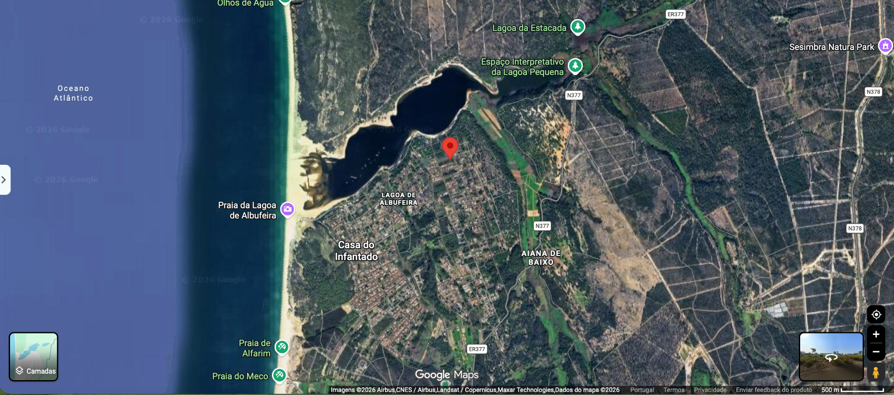
Figura-fundo (P2): tapete de pinhal contínuo perfurado por clareiras de moradias em grelha N-S; fundo de floresta-duna-lagoa-mar. A 1 km: lagoa a N, oceano a W, N377 a E.
Verde-pinheiro, ocre-areia, terracota, branco, azul-negro.
Areias pliocénicas, dunas, arriba fóssil, aluviões. Infiltração alta, erodíveis, freático alto.
Pinhal bravo, zimbral, dunas, caniçal. ZEC 4318 ha + ZPE + Ramsar. Espécies: Armeria rouyana, cágado, boga-portuguesa, aves da Lagoa Pequena.
Intensidade máx. X Mercalli. Referência 6,1 Richter / VII MM.
Sem risco elevado direto (PULA); cota 27 m. Condicionantes REN e galgamento costeiro.
Interface urbano-florestal. Sesimbra: 658 ha alto + 2706 ha muito alto. Regime APPS.
Fontes difusas: N377/N378, sazonalidade, fossas antigas. Sem indústria pesada visível.
Espaço Interpretativo, Natura Park, praias. Sem escola/saúde a 500 m; Aiana 2–4 km, Sesimbra 8–12 km.
Moradias isoladas 1–2 pisos, paredes brancas, telha cerâmica, muros baixos, loteamentos 1970–90.
Não verificável sem vistoria: idade, sistema construtivo, patologia.
Pistas de projeto P2
Faixa de bosque-comum junto à lagoa (corta-fogo/cheia): passadiço, charco, observatório. Construir a S.
Tipologia térrea em L em torno do pinhal existente; fundação leve; cisterna e fossa ecológica.
Acalmia de via, SuDS, iluminação âmbar, ligação praia–lagoa–N377 a pé/bici.
P3 — Caracterização climática (EPW × IPMA × Csb)
Estação Lisboa-Geofísico 535 (77 m), a ~22,9 km, Δalt +50 m. Normal IPMA 1991–2020 + EPW TMY 1990–2023 + Köppen-Geiger Csb (verão seco temperado; inverno húmido suave).
Pico início–meados agosto. Ago TT 23,8 / TX 28,8 / TN 18,8. Extremo 43,3 °C (04/08/2018).
N 42,6% + NW 31,6% (Jun–Set), média 4,1 m/s. Atravessamento N↔S.
Ano IPMA 793,5 mm (Nov–Jan concentrado); TMY 364 mm — não usar EPW para água. Jul 2,6 mm; Ago 5,4 mm.
TN Jan 8,6 °C; TN<0: 0 dias/ano. Sem geada. Amplitude dia-noite 10–12 K.
Necessário Mai–Set; crítico 29 Jun–15 Set. 110,6 dias TX≥25/ano; 33,2 dias TX≥30.
Lagoa-pinhal-mar: tardes −1–2 K, noites húmidas + nevoeiro. Não aplicar ilha de calor de Lisboa.
Profundidade ≤7 m; massa a E; vidro a S com pala e a N para brisa; W ≤10% com brise; beiral 80 cm; telha ventilada clara.
Planta em L; quartos a E, estar a S, serviços a W; cisterna sob pátio; sem subsolo.
Divergências: mês mais chuvoso Mar (TMY) vs Nov (Normal); médias ±0,3–1,1 K. Não verificável: vento/humidade à escala do lote, brisa horária, sombra dos pinheiros.
P4 — Cultura arquitetónica do território
Caiar + telha + vãos pequenos. Ex.: casario da Santiago, Sesimbra.
arrabidaparquemarinho.ualg.pt · patrimonios.pt
Construção dunar leve (estorno/tabuado). Ex.: Fonte da Telha, Castelo.
Fonte secundária; a confirmar em Oliveira & Galhano.
Quinta-pátio com tanque e pérgola. Ex.: Quinta da Bacalhôa, Azeitão (MN).
e-cultura.pt · DGPC 70212
Convento de Jesus, Setúbal — Carrilho da Graça — reabertura 2024. Reabilitação 2012–2024. Prémio Ruy d’Athouguia 2026.
noticias.mun-setubal.pt
Casa em Sesimbra — ARX Portugal — ano n/c. Mantém figura planimétrica; piso enterrado; cobertura-terreno.
arx.pt/projecto/casa-em-sesimbra
Reuso mínimo + museografia do mar. Ex.: Museu Marítimo de Sesimbra (nomeado EMYA 2021) e Convento de Jesus 2024.
P5 — SWOT
Matriz 2×4. Dois pontos por quadrante; dois pontos decorrem de indicadores P1 (valor e ano entre parênteses).
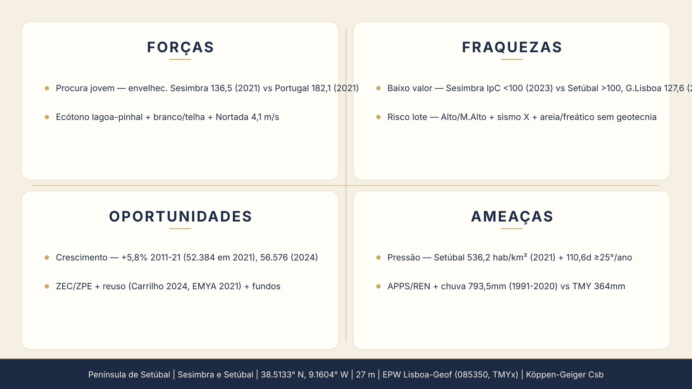
P6 — Volumetria e programa preliminar
+ Atravessa a Nortada; pala S resolve o pico de calor.
− Frente W longa; faixa corta-fogo maior.
+ Pátio sombreado e ventilado a N-NW; preserva pinheiro.
− Risco de retenção de calor/humidade; gestão de fogo.
| Espaço (hipótese ~350 m²) | m² | un. | Nota |
|---|---|---|---|
| Fogo T2 pátio | 65 | 3 = 195 | E massa, S pala, N brisa |
| Estúdio investigador | 35 | 1 = 35 | W tampão |
| Sala comum + copa | 60 | 1 = 60 | S pérgola, tanque |
| Receção / loja / saúde | 25 | 1 = 25 | mínimo diário |
| Apoio / ETAR / cisterna | 35 | — | sem subsolo |
| Exterior: pátio / bosque / observatório | 300–500 | buffer lagoa | |
| Estacionamento 4 + bikes + água DFCI | — | 4 | 2 acessos |
Limite do lote e índice PDM/REN/APPS/ZEC; Vs30; água e saneamento; sombra/vento reais; procura e preço; gestão sazonal e fogo.
1. Pinheiros, muros, cotas, fossas, acessos e faixa de gestão.
2. Freático, marcas de cheia, solo, brisa tarde vs manhã.
3. Uso da rua, ruído N377, serviços em Aiana/Alfarim.
Grupo 8 — Documento de trabalho
Análise de sítio P1–P6. Sesimbra e Setúbal. 38.5133° N, 9.1604° W, 27 m. Grupo 8: Isabella Misiec (20221001) · Nuno Heleno (20181310) · Giovanna Meneghel (20221006). Documento a atualizar à medida do projeto.
O grupo 8 declara ter utilizado o Muse Spark 1.3 Free nos prompts P0–P6, em setembro de 2026. Foram anexadas quatro imagens, ficheiro EPW Lisboa-Geof e ficha IPMA Lisboa / Instituto Geofísico 1991–2020. Foram verificados o sítio e as coordenadas, os dados climáticos do IPMA, a classificação Köppen-Geiger e os dados INE/Pordata. Foram rejeitados ou assinalados como não verificáveis os dados para os quais não foi possível confirmar uma fonte adequada. Tempo estimado de aceleração face ao procedimento manual: 2 h. Os signatários assumem integralmente a autoria.
Isabella Misiec (20221001) · Nuno Heleno (20181310) · Giovanna Meneghel (20221006) — setembro de 2026.
Grupo 8 — EX02 · Estudo 01 · Desenho + prompts + resultado
Um exercício de transformação de um desenho à mão numa imagem fotorrealista através de prompts. O processo define o edifício, o contexto, os materiais e a luz, preservando a perspetiva e os elementos do desenho original.
01 — Ponto de partida
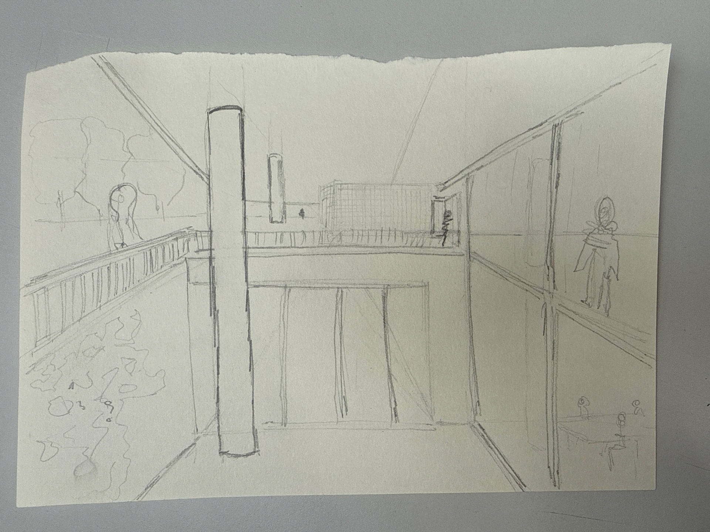
02 — Instruções de geração
Prompts originais em inglês, organizados pelas seis dimensões do exercício.
Programme, volume, fixed elements and viewpoint. This is a school. We are looking to a patio of this school This building has two floors. on the right side there is a big window where you can see inside tables, a pilar, people. The outside on the second floor is open but with a roof.The rail is on the edge of the second floor. The ground floor is patio with a interior garden that leeds to a big hallway.
Site, city, vegetation, uses and human presence. So this school is in Marroco. there are students around, mostly high school. its a sunny day.
Matter, texture, ageing and level of detail. The ceiling is metal polish, the frame of the windows are silver metal. The pillars are in dark red. The walls are white tiles. The rail is also metal.
Time, orientation, atmosphere, intensity and contrast. This is going to be a daylight scene like in the end of the afternoon.
Make this image photo realistic. Corona rendered style.
What must be preserved and unchanged Let's preserve the overall dimensions, perspective And Elements fidelity
03 — Primeira geração e ajustes
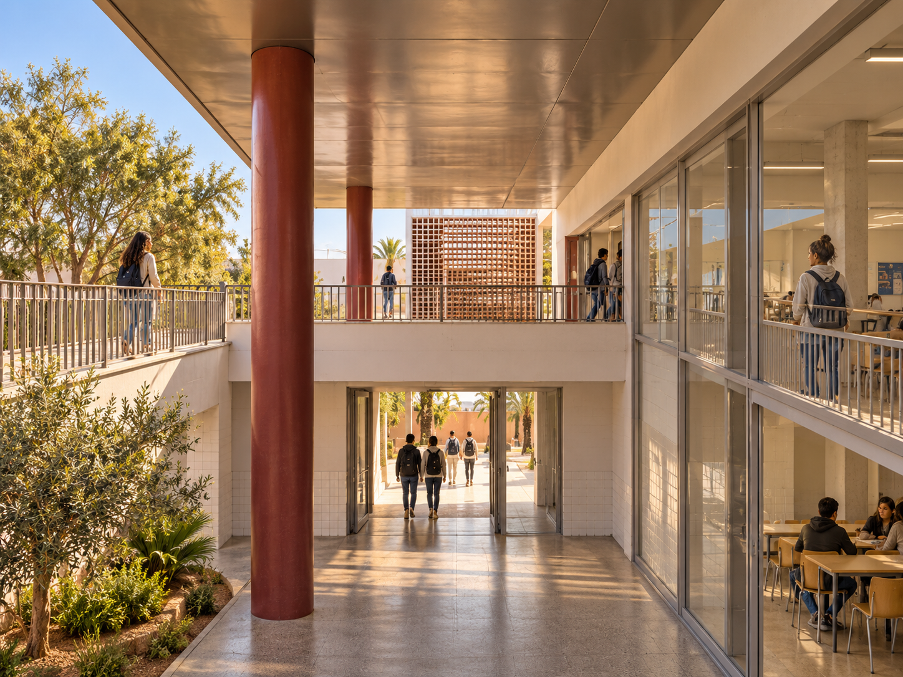
A revisão pede o alinhamento dos pisos, um pilar circular vermelho e uma parede completa nas zonas indicadas no prompt.
On the red circle the floors are in the same leve. inside the green circle fix the pilar to also circular and red. inside the yellow circle its a full wall\
04 — Resultado final
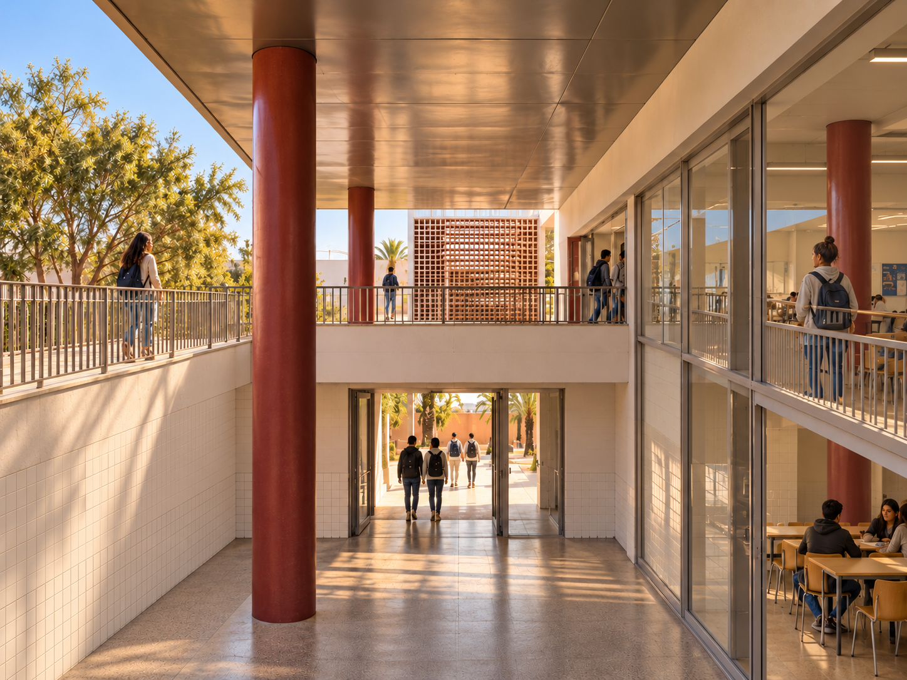
Grupo 8 — EX02 · Estudo 02 · Modelo 3D + prompts + resultado
A partir de um modelo 3D desenvolvido no SketchUp, este exercício explora a transformação de uma vista de um estádio de futebol numa imagem fotorrealista. Os prompts definem o contexto, os materiais, a presença humana e a iluminação, seguindo-se ajustes e a exploração de um novo enquadramento.
01 — Ponto de partida · SketchUp
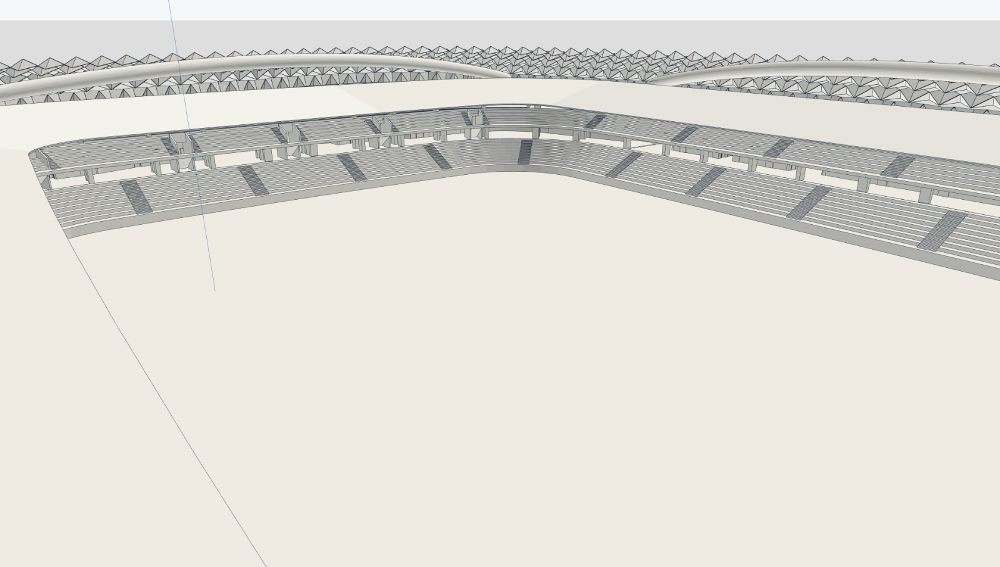
02 — Instruções de geração
Prompts originais em inglês, organizados pelas seis dimensões do exercício.
Program, volume, fixed elements and point of view. It is a football stadium for the Oriental de Lisboa club (in Chelas). The view is from a camera and looking towards a corner (as you can see) there are two stands, between them is the main access area with some support bars.
Site, city, vegetation, uses and human presence. Insert the pitch and all visible equipment (goalposts) and some players on the field as well as some fans in the stands.
The stands are a mixture of yellow and red(s), the club's colors… The canopy above the stands is white and the arches are red (dark – the club's color (maroon)). The exterior 'shell' of the stadium is this color inside (and beige on the outside, but it may not be visible from this angle).
Time, orientation, atmosphere, intensity and contrast. This is going to be a daylight scene like in the end of the afternoon. The stadium has spotlights along the white marquee.
Make this image photo realistic. Corona rendered style.
What must be preserved and unchanged Let's preserve the overall dimensions, perspective And fidelity Elements fidelity
03 — Primeira geração
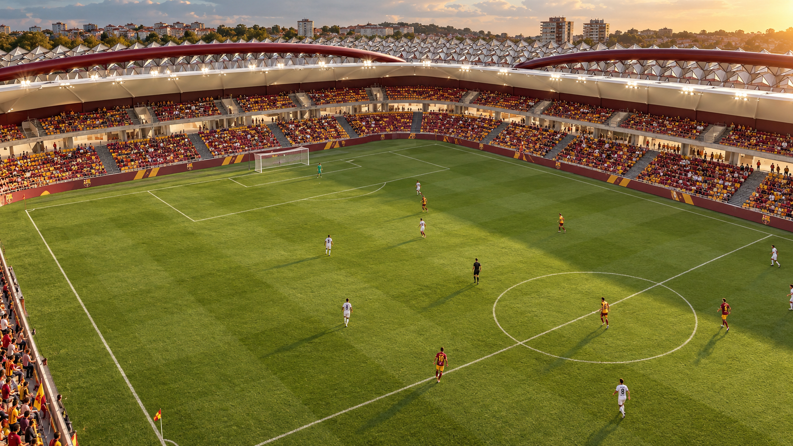
04 — Revisão e novo enquadramento
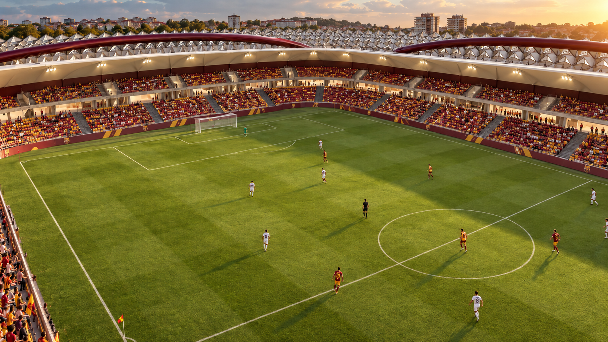
A revisão pede que os projetores sejam colocados por baixo da cobertura. Em seguida, um novo prompt solicita uma vista aproximada do guarda-redes a defender uma bola no mesmo estádio.
the lights in the red area are located wrong. they should be under, like the area in blue can you add a closeup view of the goalie catching a ball in this stadium
05 — Resultado final · Novo ponto de vista
Grupo 8 — EX02 · Estudo 03 · Render 01
A partir de um render de um edifício residencial na frente ribeirinha do Montijo, os prompts trabalham os materiais, a presença humana e a luz de fim de tarde. As revisões afinam a continuidade das passagens pedonais e a distribuição da vegetação.
01 — Ponto de partida
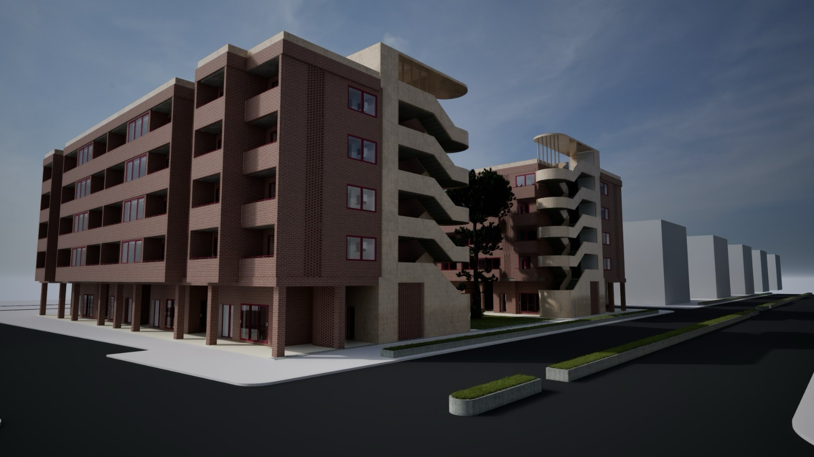
02 — Instruções de geração
Prompts originais em inglês, tal como apresentados no exercício.
This is a residencial building. We are outside of the building looking into it. This building has 5 floors with the first being commercial. The main material of the building is brick, the framing on the windows is made of wine red aluminium, and the stairs are made of concrete with a beige finish. The centre of the building has a garden lougradouro.
Site, city, vegetation, uses and human presence. This residential building is located at the riverfront of Montijo, facing the estuary. The building aligned behind it follow the same visual language. The road in front of it is asphalt and it is a 2 road avenue, and the roadside pavement is made of concrete tiles. Please add greenery to the separator in the road, and passageways for pedestrians. Also please add people throughout the scene.
Time, orientation, atmosphere, intensity and contrast. This is going to be a daylight scene like in the end of the afternoon. Place the sun towards the left of the photo like in a sunset.
Make this image photo realistic. Corona rendered style.
What must be preserved and unchanged Let's preserve the overall dimensions, perspective And fidelity Elements fidelity'
03 — Primeira geração
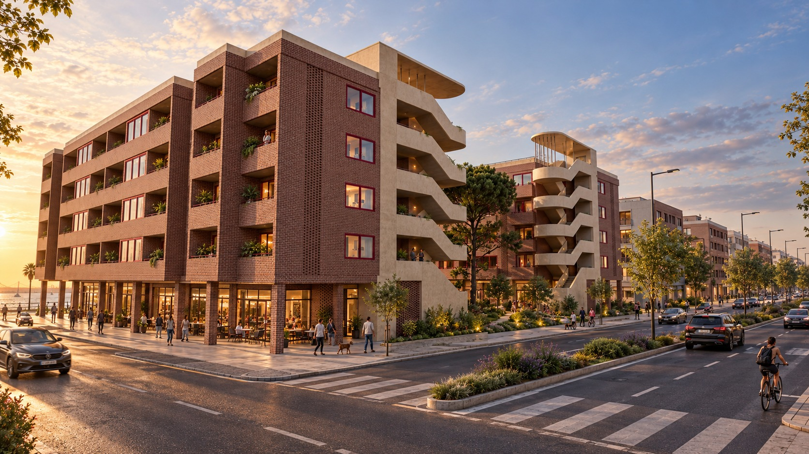
04 — Revisões
inside the red circle make a pavement for the pedestrians be able to pass. inside the purple area there is no vegetation on the floor
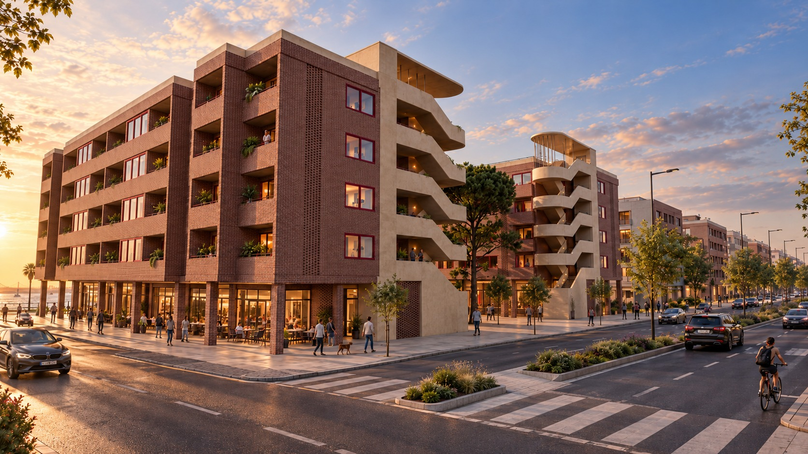
on the red area, just keep the crosswalk continuous. and the orange, keep the vegetation
05 — Resultado final
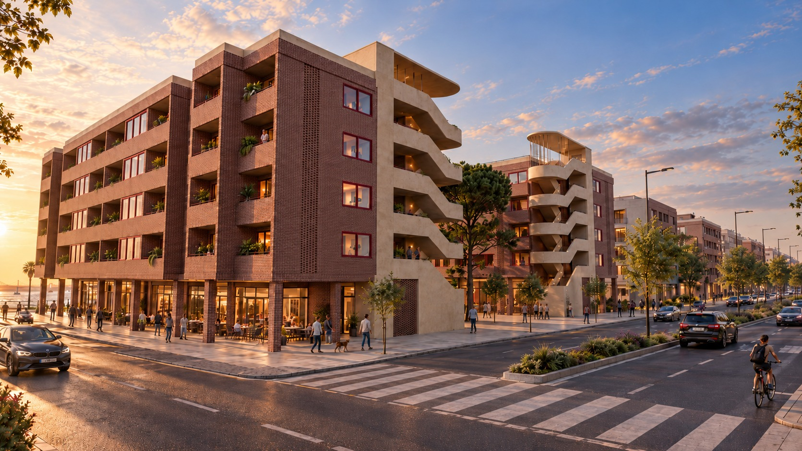
Grupo 8 — EX02 · Estudo 04 · Render 02
Uma vista aérea renderizada do estádio do Oriental de Lisboa serve de base à geração de uma imagem com jogadores, adeptos e vegetação envolvente. A revisão pede a reposição de espaços verdes interpretados como lugares de bancada.
01 — Ponto de partida
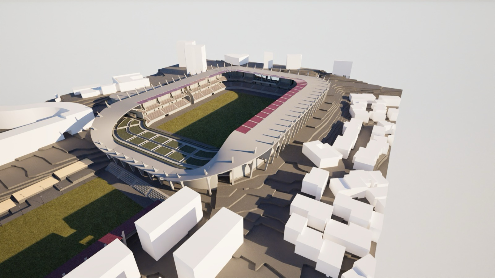
02 — Instruções de geração
Prompts originais em inglês, tal como apresentados no exercício.
Program, volume, fixed elements and point of view. It is a football stadium for the Oriental de Lisboa club (in Chelas). The view is from a camera and looking towards a corner (as you can see) there are two stands, between them is the main access area with some support bars.
Site, city, vegetation, uses and human presence. Insert the pitch and all visible equipment (goalposts) and some players on the field as well as some fans in the stands. On the green area outside the stadium, make low vegetation
The stands are a mixture of yellow and red(s), the club's colors… The canopy above the stands is white and the arches are red (dark – the club's color (maroon)). The exterior 'shell' of the stadium is this color inside (and beige on the outside, but it may not be visible from this angle).
Time, orientation, atmosphere, intensity and contrast. This is going to be a daylight scene like in the end of the afternoon. The stadium has spotlights along the white marquee.
Make this image photo realistic. Corona rendered style.
What must be preserved and unchanged Let's preserve the overall dimensions, perspective And fidelity Elements fidelity
03 — Primeira geração
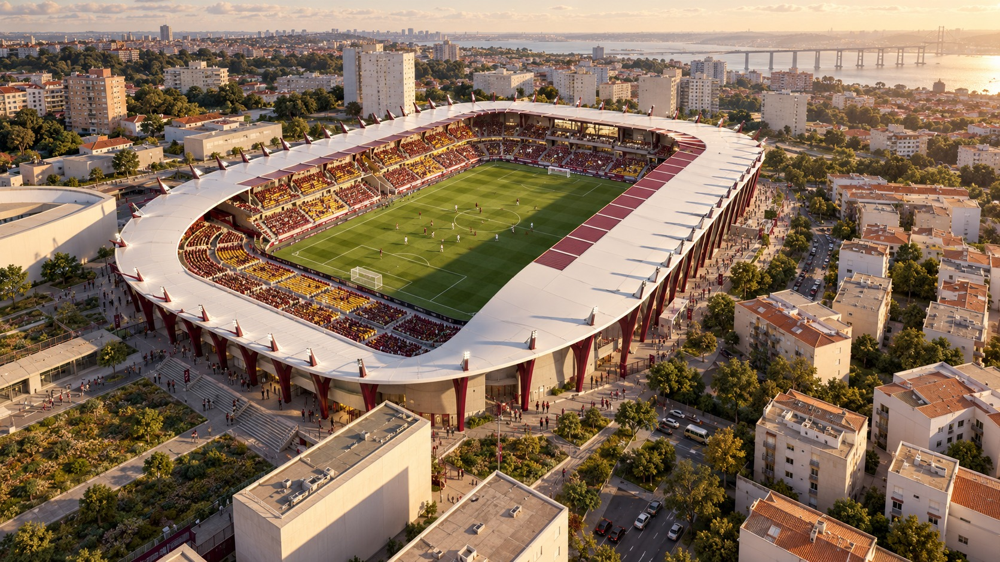
04 — Revisão
This are not seats . please make them green spaces like the original photo
05 — Resultado final
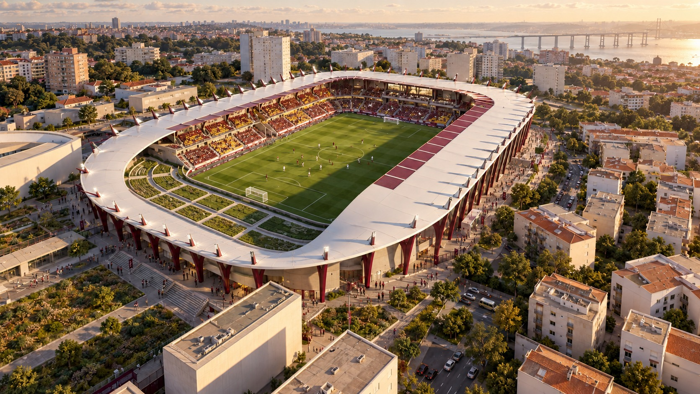
Grupo 8 — EX02 · Estudo 05 · Render 03
O render de um jardim interior de um edifício residencial no Montijo é transformado numa imagem com vegetação mais realista, caminhos em pedra e presença humana. Um segundo prompt explora o mesmo espaço num dia de chuva.
01 — Ponto de partida
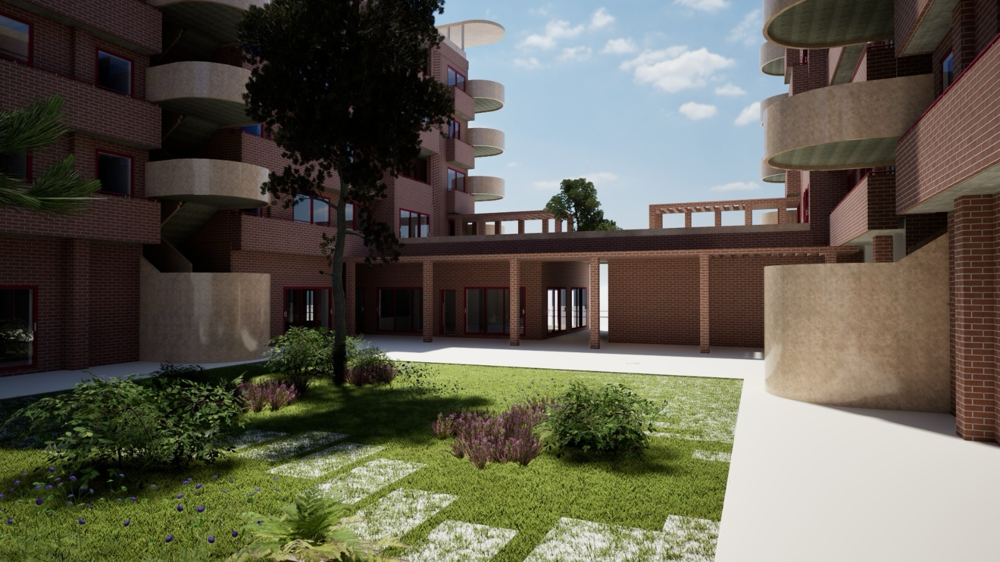
02 — Instruções de geração
Prompts originais em inglês, tal como apresentados no exercício.
This is a residencial building. We are outside of the building looking into it. This building has 5 floors with the first being commercial. The main material of the building is brick, the framing on the windows is made of wine red aluminium, and the stairs are made of concrete with a beige finish. The centre of the building has a garden lougradouro.
Site, city, vegetation, uses and human presence. This residential building is located at the riverfront of Montijo, facing the estuary. The building aligned behind it follow the same visual language. the roadside pavement is made of concrete tiles. Add the stone to the walkway through the garden, and make the greenery more realistic. Also please add people throughout the scene.
Time, orientation, atmosphere, intensity and contrast. This is going to be a daylight scene like in the end of the afternoon. Place the sun towards the left of the photo like in a sunset.
Make this image photo realistic. Corona rendered style.
What must be preserved and unchanged Let's preserve the overall dimensions, perspective And fidelity Elements fidelity'
03 — Primeira geração
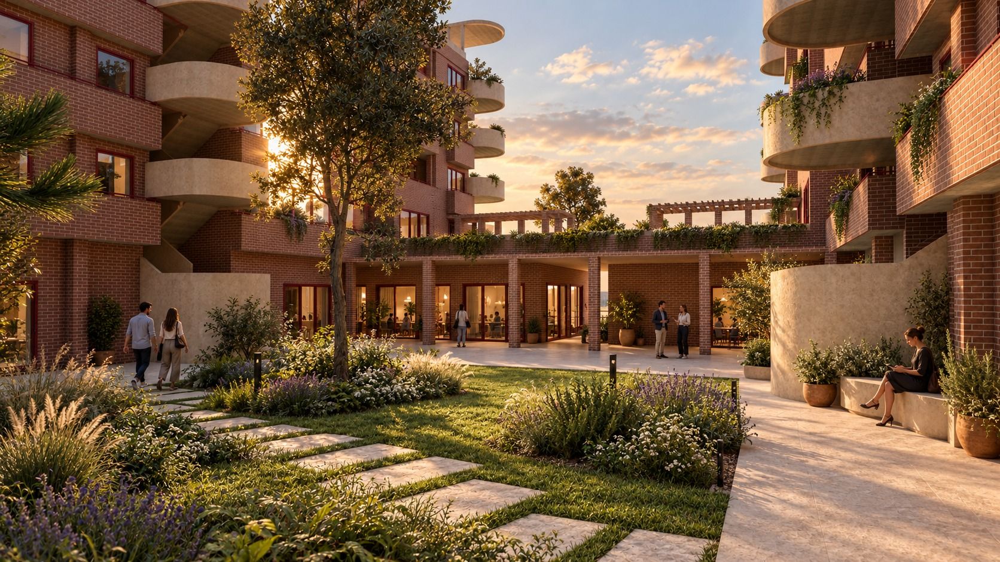
04 — Variação atmosférica
now make it in a rainy day
05 — Resultado final
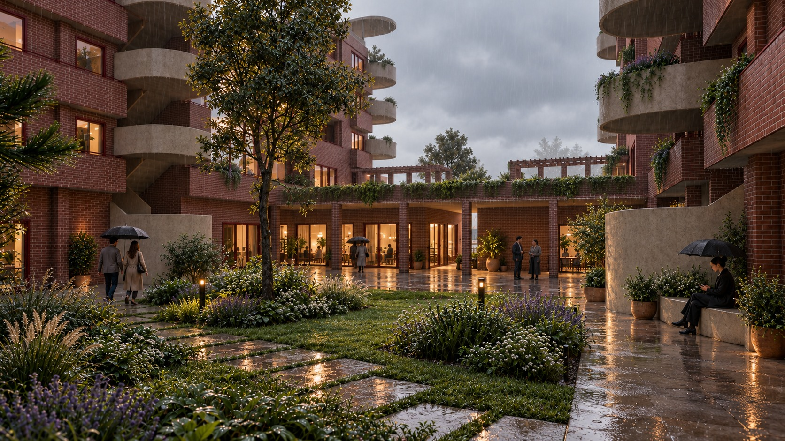
Grupo 8 — EX03
Cinco quadros de enquadramento para o projeto habitacional em Sesimbra: do uso do solo ao desempenho energético, cada regra é associada a uma condição de projeto.
Conteúdo transposto dos seis ficheiros MD fornecidos, com as referências e a data de consulta neles indicadas: 26/10/2026. As indicações “SEM FONTE” são mantidas. A transposição não constitui verificação da vigência ou da aplicabilidade dos diplomas.
Quadro 01 · 8 requisitos
Parâmetros urbanísticos e condicionantes
| Item | Exigência (Diploma + Artigo/Secção) | Valor ou Critério (SI) | Citação Literal (máx. 30 palavras) | Efeito na Parcela / Condição para o Projeto | Data de Consulta |
|---|---|---|---|---|---|
| 1. Categoria de solo e usos compatíveis | Regulamento do PDM de Sesimbra (Declaração n.º 9/2023), Artigo 8.º, n.º 2 [3] | Solo Urbano / Espaços urbanos/urbanizáveis (uso predominantemente habitacional, comércio e serviços) [3]. Para o estatuto específico "Não Atribuída", os parâmetros de detalhe estão SEM FONTE [3]. | "Espaços urbanos/urbanizáveis, destinados predominantemente a habitação e equipamento complementar e ainda a unidades comerciais, de serviços, hoteleiros ou similares..." [3] | Viabiliza o uso habitacional pretendido, mas obriga à emissão de Pedido de Informação Prévia (PIP) ou Plano de Pormenor para definir os parâmetros de detalhe da categoria [3][4]. | 26/10/2026 |
| 2. Índice de utilização e área de construção máxima | SEM FONTE (Regulamento do PDM de Sesimbra — falta Plano de Pormenor / Ficha de Especificação de Loteamento) [3] | SEM FONTE (Não consta valor literal de índice para a designação "Não Atribuída"). A.C. máx. = 4500 m2×Iˊndice (SEM FONTE) | SEM FONTE | Impossibilidade de determinar a Área de Construção Máxima (m2) até à fixação do índice aplicável por instrumento de detalhe municipal [4]. | 26/10/2026 |
| 3. Cércea / altura máxima e número de pisos | REGEU (Decreto-Lei n.º 38 382), Artigo 59.º [5] (PDM Sesimbra sem valor específico para "Não Atribuída": SEM FONTE) | Limitação da altura pelo plano de 45∘ a partir do alinhamento da edificação fronteira [5]. Número de pisos exato: SEM FONTE. | "A altura de qualquer edificação será fixada de forma que (...) nenhum dos seus elementos (...) ultrapasse o limite definido pela linha recta a 45 graus..." [5] | A altura da edificação fica condicionada à largura das vias confinantes (Rua das Primaveras / Av. das Acácias) e ao plano inclinado de 45∘ [5]. | 26/10/2026 |
| 4. Afastamentos mínimos (vias, confrontações, logradouros) | REGEU, Artigo 60.º e Artigo 62.º, § 2.º [5]; PDM Sesimbra, Artigo 12.º, n.º 3, al. b) [6][7] | Mínimo de 10 m entre fachadas habitáveis [5]; profundidade de logradouro ≥0,5×altura da fachada [5]; afastamento ao eixo de vias: 12 m a 20 m [7]. | "a distância mínima entre fachadas de edificações nas quais existam vãos de compartimentos de habitação não poderá ser inferior a 10 metros." [5] | A implantação no terreno de 4500 m2 deve garantir recuo mínimo de 10 m para fachadas com janelas de habitação e salvaguardar a faixa de proteção viária das ruas confinantes [5][7]. | 26/10/2026 |
| 5. Área de implantação máxima e área impermeabilizada máxima | SEM FONTE (Regulamento do PDM de Sesimbra, Artigo 6.º / Artigo 177.º — faltam índices específicos de implantação/impermeabilização para "Não Atribuída") [8][9] | SEM FONTE | SEM FONTE | A definição das áreas máximas de implantação (m2) e de impermeabilização (m2) fica dependente do regulamento do loteamento ou plano de urbanização local em falta [4]. | 26/10/2026 |
| 6. Estacionamento mínimo exigido para o uso | Regulamento do PDM de Sesimbra (Declaração n.º 9/2023), Artigo 103.º, n.º 4 [10]; Decreto-Lei n.º 163/2006, Anexo Secção 3.2.6 [11] | 1,5 lugares/fogo (0,5 puˊblicos + 1,0 privado) [10]. Mínimo de 1 lugar adaptado a mobilidade condicionada em lotação <50 lugares [11]. | "Estacionamento público: 0,5 lugares/fogo (...) Estacionamento total: 1,5 lugares/fogo..." [10] | O projeto habitacional deve prever obrigatoriamente 1,5 lugares de estacionamento por cada fogo criado dentro do lote ou na área de cedência [10]. | 26/10/2026 |
| 7. Condicionantes sobrepostas à parcela | Regulamento do PDM de Sesimbra (Declaração n.º 9/2023), Artigo 1.º-A, n.º 1, al. b) [12], Artigo 145.º [13] e Artigo 147.º [14] (POC-EO) | Sobreposição do Programa da Orla Costeira Espichel-Odeceixe (POC-EO) / Faixas de Proteção e Salvaguarda Costeira [12][14]. (REN/RAN específicas grafadas na Planta de Condicionantes em falta). | "as normas relativas à faixa de proteção costeira, à faixa de proteção complementar, às faixas de salvaguarda (...) aplicam-se cumulativamente, prevalecendo (...) as mais restritivas." [13] | Submissão obrigatória do projeto arquitetónico a parecer/autorização das entidades de tutela da Orla Costeira (APA / ICNF), prevalecendo o regime de proteção mais restritivo [13]. | 26/10/2026 |
| 8. Servidões non edificandi ou restrições de altura | Regulamento do PDM de Sesimbra (Declaração n.º 9/2023), Artigo 12.º, n.º 3, al. b) [6][7] e Artigo 152.º/153.º [15][16] | Faixa non aedificandi ao longo de estradas (20 m para Nível 1; 15 m para Nível 2; 12 m para Nível 3, medidas ao eixo) [7]. Interdição na Faixa de Proteção Costeira do POC-EO [15]. | "nos espaços urbanos/urbanizáveis (...) devendo ser asseguradas as seguintes faixas de proteção, medidas para um e para outro lado do eixo das vias (...) Nível 3 — 12 m." [6][7] | Condiciona a implantação de vedações e edifícios ao recuo legal obrigatório em relação aos eixos da R. das Primaveras e Av. das Acácias [6][7]. | 26/10/2026 |
Plano Diretor Municipal de Sesimbra (PDM): Regulamento republicado com a Alteração por Adaptação decorrente do Programa da Orla Costeira Espichel-Odeceixe (POC-EO), aprovada por Declaração n.º 9/2023 (_Diário da República_, 2.ª série, n.º 16, de 23 de janeiro de 2023) [1][17], em conjugação com a versão ratificada pela Resolução do Conselho de Ministros n.º 15/98 [18].
Regulamento Geral das Edificações Urbanas (REGEU): Decreto-Lei n.º 38 382, de 7 de agosto de 1951, na sua redação atual [5].
Regime de Acessibilidades: Decreto-Lei n.º 163/2006, de 8 de agosto [11][19].
Data de Consulta: 26 de outubro de 2026.
Quadro 02 · 7 requisitos
Procedimentos e licenciamento urbanístico
| Item | Exigência (Diploma + Artigo/Secção) | Conteúdo/Valor | Citação Literal (máx. 30 palavras) | Obrigação para o Futuro Projeto | Data de Consulta |
|---|---|---|---|---|---|
| 1. Tipo de operação urbanística e seu enquadramento | RJUE (Decreto-Lei n.º 555/99), Artigo 2.º, alíneas b) e j)[5]; Portaria n.º 320/2026/1, Anexo I, Secção 1[6] | Obras de construção (criação de novas edificações) enquadradas no conceito geral de operação urbanística (edificação e uso do solo)[5]. | "«Obras de construção», as obras de criação de novas edificações; (...) «Operações urbanísticas», as operações materiais de urbanização, de edificação, utilização dos edifícios ou do solo..."[5] | Exigência legal: Classificação formal do pedido como "obra de construção" para habitação no formulário único de instrução[6]. | 26/10/2026 |
| 2. Procedimento aplicável e justificação | RJUE, Artigo 4.º, n.º 2, alínea c)[3] e Artigo 13.º-A[7]; PDM Sesimbra (Declaração n.º 9/2023), Artigo 1.º-A[8] | Licenciamento municipal[3]. A construção nova fora de loteamento/plano de pormenor e em área abrangida por Instrumento de Gestão Territorial / POC exige licença e não comunicação prévia[3]. | "Estão sujeitas a licenciamento: (...) c) As obras de construção (...) de imóveis em áreas não abrangidas por operação de loteamento ou por plano de pormenor..."[3] | Exigência legal: Submissão prévia do pedido de Licenciamento (ou PIP voluntário) à Câmara Municipal de Sesimbra[3][6]. | 26/10/2026 |
| 3. Elementos instrutórios e peças exigidas | Portaria n.º 320/2026/1, Artigo 1.º, n.º 2[9], Anexo V (Capítulo IV, n.º 24)[10] e Anexo VI, n.º 1, al. c)[18] | Requerimento único (Anexo I)[6], Projeto de Arquitetura[10], Projetos de Especialidades[14], Memória Descritiva[19], Plano de Acessibilidades[11] e Folha de Cálculo de Índices e Parâmetros Urbanísticos[18]. | "A folha de cálculo de índices e parâmetros urbanísticos contidos no quadro sinóptico, quando seja exigível, são ainda entregues em formato ODS, XLS ou XLSX."[18] | Exigência legal: Instrução completa do dossier com todas as peças escritas, desenhadas e ficheiro editável do quadro sinóptico/índices[10]. | 26/10/2026 |
| 4. Formatos e formalidades de entrega | RJUE, Artigo 8.º-A, n.º 1[20]; Portaria n.º 320/2026/1, Anexo VI, n.º 1 e n.º 8[18] | Tramitação desmaterializada: Peças escritas e desenhadas em PDF/A[21]; Planta de implantação em DWG georreferenciada[18]; Folha de cálculo em ODS/XLS/XLSX[18]; Assinatura digital qualificada (CC/CMD/SCAP)[22]. | "As peças escritas e desenhadas são entregues em formato PDF/A (...) A planta de implantação deverá ser ainda apresentada em formato dwg (...) a folha de cálculo de índices (...) em formato ODS, XLS ou XLSX."[18][21] | Exigência legal: Submissão digital exclusiva na plataforma eletrónica municipal[20][21]. (A entrega em suporte papel é mera exceção por indisponibilidade técnica — Anexo VI, n.º 7)[22]. | 26/10/2026 |
| 5. Termos de responsabilidade e seguro exigidos | RJUE, Artigo 10.º[20]; Portaria n.º 320/2026/1, Anexo V, n.º 24, al. m) e n)[16], Anexo VI, Cap. III/IV[23][24] | Termos de Responsabilidade dos autores e coordenador de projeto[23]; Seguro de Responsabilidade Civil dos técnicos (Lei n.º 31/2009)[16][23]; Seguro de Acidentes de Trabalho (Lei n.º 98/2009)[16]. | "Comprovativo da contratação de seguro de responsabilidade civil do diretor de obra (...) Apólice de seguro que cubra a responsabilidade pela reparação dos danos emergentes de acidentes de trabalho..."[16] | Exigência legal: Apresentação obrigatória de declarações e comprovativos de seguros válidos emitidos por seguradoras para todos os técnicos subscritores[16][23]. | 26/10/2026 |
| 6. Consultas externas / pareceres previsíveis | RJUE, Artigo 13.º e Artigo 13.º-A[7][25]; PDM Sesimbra (Declaração n.º 9/2023), Artigo 1.º-A e Artigo 145.º[8][26] | Consulta de localização centralizada através da CCDR LVT como entidade coordenadora[7], visando parecer vinculativo da APA (Agência Portuguesa do Ambiente) e ICNF em virtude do POC Alcobaça – Cabo Espichel[7]. | "A consulta de entidades da administração central (...) que se devam pronunciar sobre a operação urbanística em razão da localização, é efetuada através de uma única entidade coordenadora, a CCDR..."[7] | Exigência legal: A instrução deve contemplar os elementos necessários para a consulta via CCDR, devendo a arquitetura conformar-se com as restrições do POC[7][8]. | 26/10/2026 |
| 7. Prazos aplicáveis e controlo sucessivo | RJUE, Artigo 23.º, n.º 1 e 2[27], Artigo 93.º[28], Artigo 98.º[29], Artigo 102.º a 107.º[30][31], Artigo 111.º[32] | Prazo de decisão: 120 dias (área bruta ≤300 m2) ou 150 dias (300 m2<ABC≤2200 m2)[27]. Sujeito a deferimento tácito[27][32]. Fiscalização posterior sujeita a embargo, demolição e coimas até €200.000 (singulares) / €450.000 (coletivas)[29][31]. | "A câmara municipal delibera sobre o pedido de licenciamento: a) No prazo de 120 dias (...) b) No prazo de 150 dias (...) A deliberação (...) está sujeita a deferimento tácito."[27] | Exigência legal: O projeto deve assegurar rigor e conformidade estrita; eventuais desconformidades detetadas em sede de fiscalização sucessiva podem originar a nulidade do título ou embargo da obra[29]. | 26/10/2026 |
Regime Jurídico da Urbanização e da Edificação (RJUE): Decreto-Lei n.º 555/99, de 16 de dezembro, na sua redação atualizada (incorporando as alterações do Decreto-Lei n.º 10/2024, de 8 de janeiro)[1][34].
Modelos e Elementos Instrutórios: Portaria n.º 320/2026/1, de 31 de julho de 2026[4].
Plano Diretor Municipal de Sesimbra: Regulamento republicado pela Declaração n.º 9/2023, de 23 de janeiro de 2023 (Adaptação aos Programas da Orla Costeira)[8][35].
Data de Consulta: 26 de outubro de 2026.
Quadro 03 · 5 requisitos
Edificação, habitabilidade e salubridade
| Item | Artigo | Valor ou Critério (SI) | Citação Literal (máx. 30 palavras) | Condição a Respeitar no Projeto | Data de Consulta |
|---|---|---|---|---|---|
| 1. Pé-direito livre e altura entre pisos na habitação | RGEU, Artigo 65.º, n.º 1 e n.º 2[1] | Altura mínima piso a piso: 2,70 m[1]; Pé-direito livre mínimo: 2,40 m (admitindo-se 2,20 m em vestíbulos, corredores, instalações sanitárias, despensas e arrecadações)[1]. | "A altura mínima, piso a piso, em edificações destinadas à habitação é de 2,70m (...), não podendo ser o pé-direito livre mínimo inferior a 2,40 m (...)."[1] | Garantir a cota livre vertical de 2,40 m em todos os compartimentos habitáveis e a distância entre pavimentos de 2,70 m no projeto de arquitetura[1]. | 26/10/2026 |
| 2. Áreas e dimensões mínimas dos compartimentos habitacionais | RGEU, Artigo 66.º, n.º 1[1], Artigo 67.º, n.º 1[3] e Artigo 69.º, n.º 1[4] | Área bruta mínima do fogo: T0 = 35 m2, T1 = 52 m2, T2 = 72 m2, T3 = 91 m2[3]; Compartimentos: Quarto casal = 10,5 m2[2]; Sala = 10 m2 a 16 m2[2][3]; Dimensão mínima: 2,10 m a 2,70 m (círculos inscritíveis de Ø 2,40 m para áreas ≥9,5 m2 e Ø 2,70 m para ≥12 m2)[4]. | "Os compartimentos de habitação não poderão ser em número e área inferiores aos indicados no quadro (...). As áreas brutas dos fogos terão os seguintes valores mínimos (...)."[1][3] | Assegurar a geometria interior dos compartimentos de acordo com as áreas mínimas regulamentares e a inscrição dos círculos de manobra/largura mínima exigidos por divisão[2]. | 26/10/2026 |
| 3. Vãos de iluminação natural (comunicação direta com o exterior) | RGEU, Artigo 71.º, n.º 1[5] e Artigo 73.º[5] | Área de vãos: ≥1/10 (10%) da área do compartimento, com o mínimo absoluto de 1,08 m2 no tosco[5]; Afastamento a obstáculo fronteiro: ≥0,5×altura do muro/fachada com o mínimo de 3 m[5]. | "serão sempre iluminados e ventilados por um ou mais vãos praticados nas paredes, em comunicação directa com o exterior e cuja área total não será inferior a um décimo da área..."[5] | Dimensionar os vãos envidraçados exteriores de salas e quartos para garantir no mínimo 10% da área útil e salvaguardar a distância desimpedida de 3 m[5]. | 26/10/2026 |
| 4. Condições de ventilação dos espaços | RGEU, Artigo 72.º[5], Artigo 87.º, n.º 1[6] e Artigo 109.º[7] | Ventilação transversal: Obrigatória no conjunto do fogo (janelas em fachadas opostas)[5]; Instalação sanitária: Vão para o exterior ≥0,54 m2 (abertura ≥0,36 m2) ou ventilação forçada/duto regulamentar[6]; Cozinha: Dispositivos de exaustão de fumos/gases[7]. | "Deverá ficar assegurada a ventilação transversal do conjunto de cada habitação, em regra por meio de janelas dispostas em duas fachadas opostas."[5] | Projetar a disposição dos compartimentos de modo a permitir correntes de ar cruzadas no fogo e prever condutas/sistemas de exaustão eficientes em cozinhas e instalações sanitárias[5]. | 26/10/2026 |
| 5. Logradouros, afastamentos e condições de salubridade | RGEU, Artigo 59.º[8], Artigo 60.º[8], Artigo 62.º, § 2.º[8][9] e Artigo 76.º[5][10] | Distância entre fachadas com habitação: ≥10 m[8]; Profundidade do logradouro: ≥0,5×altura da fachada (mínimo de 6 m) e área ≥40 m2[8][9]; Faixa impermeável de proteção: ≥1 m de largura ao longo do edifício[5][10]. | "O logradouro (...) deverá ter em todos os seus pontos profundidade não inferior a metade da altura correspondente da fachada adjacente (...) com o mínimo de 6 metros..."[8][9] | Implantar o edifício na parcela garantindo o logradouro tardoz com profundidade mínima de 6 m, afastar fachadas habitáveis no mínimo 10 m e prever o plinto impermeável perimetral de 1 m[5]. | 26/10/2026 |
Regulamento Geral das Edificações Urbanas (RGEU): Decreto-Lei n.º 38 382, de 7 de agosto de 1951, com as alterações introduzidas até à sua redação em vigor[1].
Data de Consulta: 26 de outubro de 2026.
Quadro 04 · 8 requisitos
Normas técnicas de acessibilidade
| Item | Referência (Artigo/Secção do Diploma ou do Anexo) | Valor ou Critério (SI) | Citação Literal (máx. 30 palavras) | Condição a Respeitar no Projeto | Data de Consulta |
|---|---|---|---|---|---|
| 1. Percurso acessível (via pública, entrada principal e todos os espaços) | DL n.º 163/2006, Artigo 2.º, n.º 3 ; Anexo, Secção 2.1.1 , Secção 3.2.1 e Secção 4.3.1 | Largura livre mínima: 1,20 m (Secção 4.3.1) ; Altura livre de obstruções: ≥2,00 m (encerrados) e ≥2,40 m (não encerrados) (Secção 4.5.1) ; Entrada do fogo: Rotação de 360∘ (∅1,50 m) (Secção 3.3.1) . | "Os edifícios e estabelecimentos devem ser dotados de pelo menos um percurso, designado de acessível, que proporcione o acesso seguro e confortável (...) entre a via pública, o local de entrada/saída principal..." | Garantir percurso contínuo sem degraus ou obstáculos da via pública até à entrada do prédio e espaços comuns, com largura ≥1,20 m e pé-direito livre ≥2,00 m . | 26/10/2026 |
| 2. Portas de entrada/saída — largura útil | DL n.º 163/2006, Anexo, Secção 2.2.3 , Secção 3.3.8 e Secção 4.9.1 | Entrada do edifício: Largura útil ≥0,87 m (Secção 2.2.3) ; Entrada do fogo e compartimentos: Largura útil ≥0,77 m (Secção 4.9.1) ; Altura útil: ≥2,00 m (Secção 4.9.2) . | "As portas de entrada/saída dos edifícios e estabelecimentos devem ter um largura útil não inferior a 0,87 m, medida entre a face da folha da porta quando aberta e o batente..." | Projetar vãos de porta da entrada principal do prédio com pelo menos 0,87 m úteis e das habitações/divisões interiores com pelo menos 0,77 m úteis (medidos a 90∘) . | 26/10/2026 |
| 3. Circulações (patamares, galerias e corredores) e zonas de manobra | DL n.º 163/2006, Anexo, Secção 2.3.1 , Secção 3.2.7 , Secção 3.3.1 , Secção 3.3.2 e Secção 4.4.1 | Circulação comum: Largura ≥1,20 m (Secção 2.3.1) ; Patamar dos fogos: Manobra de 180∘ (1,50 m×1,20 m) (Secção 3.2.7/4.4.1) ; Corredores do fogo: Largura ≥1,10 m (Secção 3.3.2) ; Hall/Cozinha: Rotação de 360∘ (∅1,50 m) (Secção 3.3.1/3.3.3) . | "Os patamares, galerias e corredores devem possuir uma largura não inferior a 1,2 m." / "Os corredores e outros espaços de circulação horizontal das habitações devem ter uma largura não inferior a 1,1 m..." | Assegurar largura mínima de 1,20 m nas circulações comuns do prédio e de 1,10 m nos corredores das habitações, prevendo patamares dos fogos com manobra de 180∘ . | 26/10/2026 |
| 4. Corrimãos | DL n.º 163/2006, Anexo, Secção 2.3.4 , Secção 2.5.9 , Secção 4.11.1 e Secção 4.11.2 | Altura de instalação: 0,90 m (corredores/escadas) ou duplo a 0,70 m−0,75 m e 0,90 m−0,95 m (rampas >6%) ; Diâmetro preênsil: 0,035 m a 0,050 m ; Afastamento à parede: ≥0,035 m . | "Os corrimãos e as barras de apoio devem ter um diâmetro ou largura das superfícies de preensão compreendido entre 0,035 m e 0,05 m..." | Instalar corrimãos contínuos em escadas e rampas comuns a 0,90 m de altura, com secção de pega entre 3,5 cm e 5,0 cm e afastamento de 3,5 cm da parede . | 26/10/2026 |
| 5. Acesso vertical (elevador, rampa ou plataforma) | DL n.º 163/2006, Anexo, Secção 3.2.2, n.º 1 e Secção 2.5.1 | Edifício de 2 pisos: Obrigatória a previsão no projeto de espaço/condições para instalação a posteriori de meios mecânicos (plataforma elevatória de escada) (Secção 3.2.2, n.º 1) . Rampas: Inclinação ≤6% (desnível ≤0,60 m) ou ≤8% (desnível ≤0,40 m) . | "deve ser prevista no projecto a possibilidade de todos os pisos serem servidos por meios mecânicos de comunicação vertical instalados a posteriori, nomeadamente: 1) Plataformas elevatórias de escada... no caso de edifícios com dois pisos;" | Reservar na caixa de escadas e circulações comuns a área e infraestrutura elétrica necessárias para a futura montagem de plataforma elevatória ou meio mecânico vertical . | 26/10/2026 |
| 6. Instalações sanitárias adaptadas | DL n.º 163/2006, Anexo, Secção 3.3.4 , Secção 2.9.4, n.º 1 e Secção 2.9.19 | Mínimo: 1 I.S. acessível por fogo ; Rotação interior: Rotação de 360∘ (∅1,50 m livre de abertura de porta) ; Assento da sanita: Altura de 0,45 m±0,01 m ; Base de duche alternativa: Mínimo 0,80 m×0,80 m ; Paredes: Preparadas para fixação de barras de apoio . | "Em cada habitação deve existir pelo menos uma instalação sanitária (...) A disposição dos aparelhos sanitários e as características das paredes devem permitir a colocação de barras de apoio..." | Dimensionar pelo menos uma casa de banho adaptável por habitação, garantindo círculo de manobra livre de 1,50 m, paredes reforçadas e porta de correr ou a abrir para fora . | 26/10/2026 |
| 7. Lugares de estacionamento reservados | DL n.º 163/2006, Anexo, Secção 3.2.6, n.º 1 a 3 e Secção 2.8.2 | Lotação <13 lugares: Isento (Secção 3.2.6, n.º 2) ; Lotação 13 a 49 lugares: Mínimo de 1 lugar reservado supletivo em espaço comum (Secção 3.2.6, n.º 1/3) ; Dimensões do lugar: Largura ≥2,50 m + faixa lateral ≥1,00 m; Comprimento ≥5,00 m (Secção 2.8.2) . | "Podem não existir lugares de estacionamento reservados para pessoas com mobilidade condicionada em espaços de estacionamento com uma lotação inferior a 13 lugares;" | Se o parque do edifício tiver 13 ou mais lugares, prever 1 lugar reservado com largura útil total de 3,50 m (2,50 m+1,00 m) por 5,00 m de comprimento em área comum . | 26/10/2026 |
| 8. Exceções aplicáveis e condições em que podem ser invocadas | DL n.º 163/2006, Artigo 3.º, n.º 1 e Artigo 10.º, n.º 1, 2, 5 | Edifícios existentes (Art. 10.º): Regime de exceção por inviabilidade técnica desproporcionada, custos excessivos ou património histórico . Edifícios novos (Art. 3.º, n.º 1): Cumprimento obrigatório e integral, sob pena de indeferimento liminar . | "o cumprimento das normas técnicas de acessibilidade (...) não é exigível quando as obras necessárias à sua execução sejam desproporcionadamente difíceis, requeiram a aplicação de meios económico-financeiros desproporcionados..." | Em edifícios de habitação novos, a aplicação das normas técnicas de acessibilidade do DL n.º 163/2006 é imperativa, não sendo invocáveis as isenções do Artigo 10.º . | 26/10/2026 |
Regime da Acessibilidade aos Edifícios e Estabelecimentos que Recebem Público, Via Pública e Edifícios Habitacionais: Decreto-Lei n.º 163/2006, de 8 de agosto, na sua redação em vigor .
Data de Consulta: 26 de outubro de 2026.
O ficheiro MD não inclui uma lista numerada de fontes; mantém as referências ao diploma e ao anexo na tabela.
Quadro 05 · 7 requisitos
Desempenho energético e certificação
| Item | Exigência (Diploma + Artigo/Secção) | Valor ou Critério (SI) | Citação Literal (máx. 30 palavras) | Condição a Respeitar no Projeto | Data de Consulta |
|---|---|---|---|---|---|
| 1. Âmbito da operação e requisitos aplicáveis | DL n.º 101-D/2020, Artigo 3.º, alínea i)[1] e Artigo 6.º, n.º 1[2]; Manual SCE, Secção 3.2.1[3] | Edifício Novo: Entrada do projeto de arquitetura posterior a 1 de julho de 2021[3]. Enquadrado obrigatoriamente como Edifício com Necessidades Quase Nulas de Energia (NZEB)[2]. | "«Edifício novo», o edifício cujo primeiro processo de licenciamento ou autorização de edificação tenha data de entrada do projeto de arquitetura junto das entidades competentes posterior à data de entrada em vigor..."[1] | Exigência legal: O projeto deve cumprir cumulativamente os requisitos de conforto térmico, desempenho energético, envolvente, sistemas técnicos e infraestruturas de eletromobilidade[4][5]. | 26/10/2026 |
| 2. Requisitos de desempenho energético | DL n.º 101-D/2020, Artigo 6.º, n.º 1 e 9[2][6]; Manual SCE, Secção 16.1[7] e 17.1[8] | Nível NZEB: Rácio de classe energética RNt=Ntc/Nt≤1,00[8][9] (correspondente a classe energética A+, A ou B)[9]. | "Os edifícios novos devem ser edifícios com necessidades quase nulas de energia."[2] | Exigência legal: O indicador de consumo anual de energia primária prevista (Ntc) não pode ultrapassar o valor do edifício de referência (Nt)[8]. | 26/10/2026 |
| 3. Condições de envolvente (transmitâncias, pontes térmicas, vãos, fatores solares) | DL n.º 101-D/2020, Artigo 6.º, n.º 4, al. a)[4] e n.º 10, al. a) e b)[5]; Manual SCE, Capítulos 7 e 8[10][11] | Transmitância térmica U em paredes, coberturas e pavimentos [W/(m2⋅ºC)][12]; Pontes térmicas lineares (ψ) [W/(m⋅ºC)][13] (ou majoração de 5% em Nic)[14]; Vãos envidraçados: Uw / UwDN [W/(m2⋅ºC)][11] e fator solar gtot / gv[11]. | "Requisitos mínimos de desempenho energético relativos à envolvente dos edifícios, que visam, em particular, minimizar a ocorrência de patologias e limitar as necessidades de energia..."[4] | Exigência legal: Aplicação de isolamento térmico contínuo na envolvente e caixilharias de alto desempenho com dispositivos de proteção solar para mitigar o risco de sobreaquecimento[14][15]. | 26/10/2026 |
| 4. Condições de ventilação e qualidade do ar interior | DL n.º 101-D/2020, Artigo 6.º, n.º 4[4] e Artigo 16.º, n.º 1[16]; Manual SCE, Secção 9.2.1[17][18] | Taxa de renovação de ar horária mínima (Rph): ≥0,5 h−1 (renovações por hora)[17] ou em conformidade com as normas da série NP 1037[17]. | "os edifícios de habitação novos, sujeitos a grande renovação, ou cujo sistema de ventilação foi renovado, devem apresentar uma taxa de renovação de ar horária (Rph) igual ou superior a 0,5..."[17] | Exigência legal: Dimensionar o sistema de ventilação (natural, mecânico ou misto) para garantir renovação de ar de 0,5 Rph em todos os fogos sem provocar perdas térmicas excessivas[17]. | 26/10/2026 |
| 5. Exigências sobre sistemas técnicos (climatização, ventilação, águas quentes) | DL n.º 101-D/2020, Artigo 6.º, n.º 4, al. b)[4] e Artigos 10.º/11.º[19][20]; Manual SCE, Capítulo 10 e Secção 16.6.1[21][22] | Rendimentos nominais/sazonais mínimos (SCOP, SEER, ηnom)[23]. Isolamento de redes de distribuição: resistência térmica R≥0,25 (m2⋅ºC)/W[21] (penalização de 0,9 na eficiência se ausente)[21]. | "Na ausência de isolamento térmico na rede de distribuição de água quente para aquecimento ambiente ou para preparação de AQS (...) a eficiência dos respetivos sistemas técnicos deve ser multiplicada por 0,9;"[21] | Exigência legal: Instalação por técnico qualificado[19], isolamento térmico obrigatório das tubagens de distribuição e emissão de documentação de desempenho do sistema[20]. | 26/10/2026 |
| 6. Produção de energia renovável e restrições a combustíveis fósseis | DL n.º 101-D/2020, Artigo 6.º, n.º 9/10[5][6] e Artigo 34.º, n.º 8[24] (redação do DL n.º 11/2025[25]); Manual SCE, Secção 16.1.5[26] | Autoconsumo renovável: Eren por solar térmico, fotovoltaico ou bombas de calor (SPF>2,5)[26][27]. Fósseis: Cessação de incentivos públicos a caldeiras autónomas a fósseis desde 01/01/2025[24]. | "A partir de 1 de janeiro de 2025 deixam de ser concedidos incentivos financeiros à instalação de caldeiras autónomas a combustíveis fósseis, com exceção das selecionadas para investimento antes de 2025..."[24] | Transposto nacionalmente (DL 11/2025): Fim de subsídios a caldeiras autónomas a gás/fósseis[24][28]. Previsto na Diretiva (UE) 2024/1275: Meta comunitária de eliminação total do aquecimento a fósseis até 2040[28]. Recomenda-se projetar com bombas de calor e/ou solar. | 26/10/2026 |
| 7. Certificação energética (obrigação e classe aplicável) | DL n.º 101-D/2020, Artigo 18.º, n.º 1, al. a)[29], Artigo 20.º, n.º 2, al. a)/b)[30] e Artigo 23.º[31]; Manual SCE, Secção 17.1[8] | Documentos: Pré-Certificado Energético (PCE) no licenciamento[30] e Certificado Energético (CE) final para licença de utilização[30]. Classe exigida: A+, A ou B[9]. Validade: 10 anos[31]. | "Pré-certificado energético, emitido (...) antes do início da construção (...) e Certificado energético, emitido (...) no final da construção ou renovação dos edifícios, ou antes da obtenção da licença..."[30] | Exigência legal: Contratação de Perito Qualificado (PQ)[32] para elaboração do PCE (instrução do pedido municipal no RJUE) e emissão de CE para cada fração em propriedade horizontal[30][33]. | 26/10/2026 |
Sistema de Certificação Energética de Edifícios (SCE): Decreto-Lei n.º 101-D/2020, de 7 de dezembro[34], na sua redação atualizada pela alteração introduzida pelo Decreto-Lei n.º 11/2025, de 19 de fevereiro (transposição parcial da Diretiva (UE) 2024/1275 relativa ao desempenho energético dos edifícios)[35][36].
Metodologia de Cálculo Oficial: Manual SCE aprovado pela DGEG e ADENE[37].
Data de Consulta: 26 de outubro de 2026.
Quadro 06 · Síntese das cinco frentes
Itens verificados, condições imperativas, condições a confirmar e lacunas de fonte.
| Frente | Itens verificados | Condições imperativas | Condições condicionais / a confirmar | SEM FONTE |
|---|---|---|---|---|
| PDM | Categoria de solo (Solo Urbano - Espaços urbanos/urbanizáveis, PDM Sesimbra, Declaração n.º 9/2023, Artigo 8.º, n.º 2; 26/10/2026); Estacionamento mínimo (Artigo 103.º, n.º 4; 26/10/2026); Servidões e Condicionantes (Orla Costeira / POC-EO, Artigos 1.º-A, n.º 1, al. b), 145.º, 147.º; Faixas non aedificandi viárias de 12 m ao eixo de Nível 3, Artigo 12.º, n.º 3, al. b); 26/10/2026). | Respeito obrigatório pela faixa non aedificandi de 12 m ao eixo das vias confinantes (R. das Primaveras e Av. das Acácias) (Artigo 12.º, n.º 3, al. b); 26/10/2026); Aplicação cumulativa das normas do POC-EO na Orla Costeira, prevalecendo as mais restritivas (Artigo 1.º-A, n.º 1, al. b); 26/10/2026). | Afetação do uso habitacional e definição dos parâmetros para o estatuto "Não Atribuída" a confirmar por Pedido de Informação Prévia (PIP) ou Plano de Pormenor; Número final de lugares de estacionamento a confirmar em função do número total de fogos (1,5 lugares/fogo) (Artigo 103.º, n.º 4; 26/10/2026). | Índice de utilização, Área de Construção Máxima, Cércea/Altura máxima/N.º de pisos, Área de implantação máxima e Área impermeabilizada máxima para a subcategoria "Não Atribuída" (Falta Plano de Pormenor, Ficha de Especificação de Loteamento ou Regulamento de execução do PDM). |
| RJUE | Tipo de operação (Obra de construção nova, RJUE, DL n.º 555/99, Artigo 2.º, al. b); 26/10/2026); Procedimento aplicável (Licenciamento municipal, Artigo 4.º, n.º 2, al. c) e Artigo 13.º-A; 26/10/2026); Elementos instrutórios e formatos (Portaria n.º 320/2026/1, Anexos V e VI; 26/10/2026); Termos e Seguros (Artigo 10.º; Portaria n.º 320/2026/1, Anexo V; 26/10/2026); Consultas externas (CCDR LVT / APA / ICNF, Artigo 13.º-A; 26/10/2026); Prazo de decisão (150 dias para 3000 m² de construção, Artigo 23.º, n.º 1, al. b); 26/10/2026). | Sujeição imperativa a Licenciamento municipal por se localizar em área abrangida por IGT/POC fora de loteamento (RJUE, Artigo 4.º, n.º 2, al. c); 26/10/2026); Tramitação desmaterializada exclusiva com peças em PDF/A, DWG georreferenciado e ODS/XLS/XLSX (Portaria n.º 320/2026/1, Anexo VI; 26/10/2026); Apresentação dos Termos de Responsabilidade e seguros obrigatórios dos técnicos (Artigo 10.º; 26/10/2026). | Consulta prévia/parecer vinculado da APA/ICNF a articular via CCDR LVT (Artigo 13.º-A; 26/10/2026); Controlo de prazo (150 dias) sujeito a deferimento tácito e eventuais suspensões de instrução (Artigos 23.º e 93.º; 26/10/2026). | [NADA A REGISTAR — Frente integralmente coberta pelo RJUE e Portaria n.º 320/2026/1]. |
| RGEU | Pé-direito livre mínimo de 2,40 m e altura entre pisos de 2,70 m (RGEU, DL n.º 38 382, Artigo 65.º; 26/10/2026); Áreas brutas mínimas dos fogos (T0=35 m² a T3=91 m²) e dimensões de compartimentos (Artigos 66.º, 67.º, 69.º; 26/10/2026); Vãos de iluminação natural ≥ 10% da área do compartimento (mínimo de 1,08 m² no tosco) (Artigos 71.º, 73.º; 26/10/2026); Ventilação transversal e exaustão (Artigos 72.º, 87.º, 109.º; 26/10/2026); Logradouros e afastamentos entre fachadas habitáveis ≥ 10 m, profundidade de logradouro ≥ 0,5× altura da fachada (mínimo 6 m) (Artigos 59.º, 60.º, 62.º, 76.º; 26/10/2026). | Pé-direito livre mínimo de 2,40 m em zonas habitáveis e 2,70 m piso a piso (Artigo 65.º; 26/10/2026); Afastamento mínimo de 10 m entre fachadas com janelas habitáveis e logradouro tardoz com profundidade mínima de 6 m (Artigos 60.º e 62.º; 26/10/2026); Vãos de iluminação ≥ 10% da área útil com afastamento a obstáculos ≥ 3 m (Artigos 71.º e 73.º; 26/10/2026). | Geometria interior e círculos de manobra das frações a confirmar em função da definição das tipologias detalhadas (T0 a T3 e superiores) (Artigos 66.º e 67.º; 26/10/2026); Organização da ventilação transversal a validar no projeto de arquitetura (Artigo 72.º; 26/10/2026). | [NADA A REGISTAR — Frente integralmente coberta pelo RGEU]. |
| Acessibilidades (Decreto-Lei n.º 163/2006) | Percurso acessível da via pública ao edifício com largura ≥ 1,20 m e altura livre ≥ 2,00 m (DL n.º 163/2006, Artigo 2.º, n.º 3; Anexo, Secções 2.1.1, 3.2.1, 4.3.1, 4.5.1; 26/10/2026); Largura útil de portas de entrada ≥ 0,87 m e interiores ≥ 0,77 m (Anexo, Secções 2.2.3, 3.3.8, 4.9.1; 26/10/2026); Circulações comuns ≥ 1,20 m, corredores de habitação ≥ 1,10 m e manobra de 180°/360° (Anexo, Secções 2.3.1, 3.2.7, 3.3.1, 3.3.2, 4.4.1; 26/10/2026); Acesso vertical com reserva de espaço para meio mecânico em 2 pisos (Anexo, Secção 3.2.2, n.º 1; 26/10/2026); 1 I.S. adaptável por fogo (Anexo, Secção 3.3.4; 26/10/2026). | Cumprimento imperativo e integral das normas técnicas sem possibilidade de exceções por se tratar de edificação nova (Artigo 3.º, n.º 1; 26/10/2026); Garantia de percurso acessível contínuo da via pública aos fogos e reserva obrigatória de espaço/infraestrutura na caixa de escada de 2 pisos para instalação posterior de plataforma elevatória (Anexo, Secção 3.2.2, n.º 1; 26/10/2026); Portas com largura útil ≥ 0,87 m na entrada comum e ≥ 0,77 m nas habitações (Anexo, Secções 2.2.3 e 4.9.1; 26/10/2026). | Exigência de lugar de estacionamento reservado acessível (3,50 m × 5,00 m) em área comum a confirmar caso a lotação total do parque seja de 13 a 49 lugares (isento se < 13 lugares) (Anexo, Secção 3.2.6; 26/10/2026); Layout e reforço de paredes na I.S. adaptável por fogo a confirmar no projeto de execução (Anexo, Secção 3.3.4; 26/10/2026). | [NADA A REGISTAR — Frente integralmente coberta pelo Decreto-Lei n.º 163/2006 e Anexo]. |
| SCE (Decreto-Lei n.º 101-D/2020) | Âmbito de Edifício Novo NZEB (DL n.º 101-D/2020, Artigos 3.º e 6.º; Manual SCE, Secção 3.2.1; 26/10/2026); Classe energética A+, A ou B (rácio RNt ≤ 1,00) (DL n.º 101-D/2020, Artigo 6.º; Manual SCE, Secções 16.1, 17.1; 26/10/2026); Requisitos da envolvente, vãos e pontes térmicas (DL n.º 101-D/2020, Artigo 6.º; Manual SCE, Cap. 7 e 8; 26/10/2026); Ventilação Rph ≥ 0,5 h⁻¹ (DL n.º 101-D/2020, Artigos 6.º e 16.º; Manual SCE, Secção 9.2.1; 26/10/2026); Isolamento de tubagens R ≥ 0,25 (m²·ºC)/W (DL n.º 101-D/2020, Artigos 6.º, 10.º, 11.º; 26/10/2026); Cessação de incentivos a caldeiras a fósseis desde 01/01/2025 (DL n.º 11/2025, Artigo 34.º, n.º 8; 26/10/2026); Pré-Certificado Energético (PCE) e Certificado Energético (CE) (DL n.º 101-D/2020, Artigos 18.º, 20.º, 23.º; 26/10/2026). | Classificação como NZEB com exigência de rácio de consumo RNt ≤ 1,00 (Classe B ou superior) (DL n.º 101-D/2020, Artigo 6.º; 26/10/2026); Emissão obrigatória de Pré-Certificado Energético (PCE) por Perito Qualificado para instrução do licenciamento (DL n.º 101-D/2020, Artigos 18.º e 20.º; 26/10/2026); Renovação de ar Rph ≥ 0,5 h⁻¹ em todos os fogos (DL n.º 101-D/2020, Artigos 6.º e 16.º; 26/10/2026); Interdição de incentivos públicos a caldeiras autónomas a fósseis (DL n.º 11/2025, Artigo 34.º, n.º 8; 26/10/2026). | Espessura de isolamento e caixilharia a confirmar no cálculo térmico/PCE; Sistemas renováveis (solar térmico/fotovoltaico/bomba de calor) a definir em função do balanço NZEB; Acompanhamento da meta europeia de eliminação de sistemas a fósseis até 2040 prevista na Diretiva (UE) 2024/1275 (a confirmar extensão de transposição nacional futura além do DL n.º 11/2025). | [NADA A REGISTAR — Frente integralmente coberta pelo Decreto-Lei n.º 101-D/2020, Decreto-Lei n.º 11/2025 e Manual SCE]. |
Síntese transposta do sexto ficheiro MD fornecido. As categorias e conclusões correspondem ao documento de origem; não constituem verificação independente das fontes ou da vigência legal.